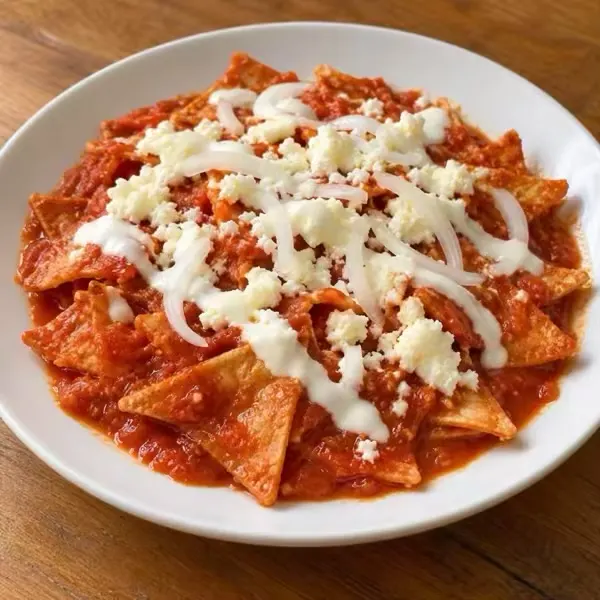
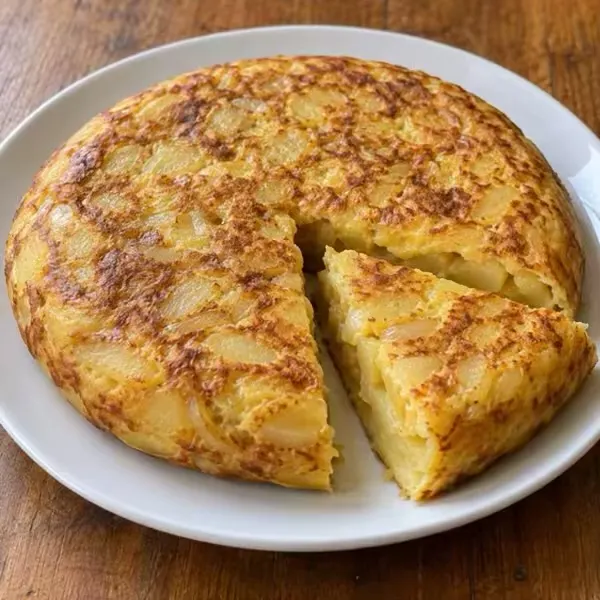

SUA COZINHA, MAIS ORGANIZADA
Use o que você tem.
Aproveite o que cozinha.
Controle validades, descubra receitas e organize suas refeições com o Vencito.
Grátis · Sem anúncios · Sem conta
MAIS IDEIAS, MENOS DESPERDÍCIO
Do que você tem ao que vai cozinhar.
Mais de 1.500 pratos para o dia a dia, com informações nutricionais aproximadas.
Valores aproximados por porção. Variam conforme quantidades, marcas e preparo.
UM POUCO DE ORGANIZAÇÃO, MAIS TRANQUILIDADE
Sua semana,
um pouco mais fácil.
Escolha receitas, monte seu plano e adicione o que falta à lista de compras.
Organize-se com o Vencito →Toque em um dia para ver o que falta.
VEJA COMO FUNCIONA
De uma foto a um aviso na hora certa.
Veja como escanear uma embalagem e cadastrar um produto no Vencito.
Recursos ↓O escaneamento no vídeo é uma simulação ilustrativa.
Como funciona
Da prateleira do mercado à sua geladeira, em três passos
Tire uma foto
Da embalagem, com a data à vista. Ou aponte a câmera ao vivo: ela lê o código de barras e a data ao mesmo tempo. Você pode adicionar mais fotos: do produto, do código de barras e da data de validade.
O Vencito completa o resto
Lê a data, sugere nome e categoria e busca o código de barras no Open Food Facts e nas suas bases de cosméticos e de outros produtos. Você confere e salva.
Receba o aviso a tempo
Uma notificação por dia, no horário que você escolher, com o que está para vencer: por padrão 30, 15, 7, 3 e 1 dia antes.
Teste aqui
Digite o que a embalagem diz
Esta é uma versão simplificada do leitor de datas do app. Ele entende os formatos impressos nas embalagens e prefere a data de validade à de fabricação.
Data de validade
—
—Recursos
Feito para a despensa, a geladeira e o armário de remédios
Leitor de datas
EXP 14/02/27, 25-08-2026, 25 AGO 2026, 08/2027, VAL 04/27… Distingue validade de fabricação e lê embalagens em seis idiomas.
Códigos de barras
Escaneamento ao vivo ou a partir da foto, com EAN, UPC e QR. O Open Food Facts (e suas bases de cosméticos e de outros produtos, como remédios isentos de prescrição) preenche nome, marca e categoria.
O que cozinhar hoje?
Receitas com o que você tem, começando pelo que vence logo. Catálogo próprio com mais de 1.500 pratos comuns e fáceis de vários países, com fotos e no seu idioma, para café da manhã, lanche, almoço e jantar, com modo de cozinha e receitas salvas. Funciona sem internet.
Plano de refeições
Um calendário com uma receita sugerida por dia, usando primeiro o que vence antes. Troque qualquer receita, remova ou adicione outra, e adicione à lista o que falta da semana.
Lista de compras
Anote o que precisa comprar, adicione com um toque o que falta numa receita ou deixe que ela inclua o que acabou. Marque o que comprou e compartilhe a lista como texto.
Várias casas
Guarde os produtos de mais de uma casa e escolha qual ver, ou veja todas juntas. Os avisos e o widget reúnem as validades de todas as casas.
Mais funcionalidades (26)
Tudo a um toque
Produtos, Receitas, Compras e Plano numa barra inferior; Ajustes fica no topo. Igual no iPhone e no Android.
Vários em sequência
Escaneamento contínuo: código de barras, data e pronto. Se uma data não é lida com segurança, o app pede que você confirme antes de salvar.
Carga rápida
Mais de cem produtos comuns com foto, para adicionar o que você comprou com um toque: leite, ovos, pão, frutas… Sugere primeiro os que você mais usa e estima a validade de cada produto.
Estatísticas
Quanto você consumiu, que parte usou a tempo, o que jogou fora e o que resgatou na última hora, com sua sequência sem desperdício, um gráfico de seis meses e a comparação com o período anterior. «Descartar» registra o que estragou; «Excluir» corrige um erro de cadastro.
Consumir com o leitor
Aponte para o código de barras ou QR do produto que você usou e uma unidade do que vence antes é descontada. Passe para o próximo sem tocar na tela.
Carregar o ticket do mercado
Com uma foto (da câmera ou da galeria) ou um PDF: lê as linhas, ignora impostos e pagamentos, estima a validade de cada produto e, se o ticket traz o código de barras, busca o nome real.
Cozinhar com o ChatGPT
Em uma receita, compartilhe a foto e as instruções com um toque: escolha o ChatGPT, envie, ative o modo de voz e ele guia você passo a passo, com as porções que escolheu.
Sem data de validade
Para o que não vence ou não tem data: fica guardado à parte, sem avisos.
Escaneamento ao vivo
Em um único quadro lê o código de barras, a data de validade e o nome do produto. Cada valor só é confirmado quando se repete, para evitar leituras borradas.
Várias fotos por produto
Guarde uma foto do produto, uma do código de barras, uma da data de validade e quantas quiser. Aparecem numa galeria que se desliza.
Widgets
Na Tela de Início e na Tela Bloqueada, com o que vence a seguir. Toque num produto para abri-lo no app.
Situação num relance
Vencidos, a vencer e próximos, com um resumo no topo e uma miniatura de cada produto.
Deslize para consumir
Deslize para usar uma unidade ou tirar o produto. Se errar, no iPhone sacuda para desfazer e no Android toque em «Desfazer».
iPad e tablets
Lista e detalhe lado a lado, em qualquer orientação; no iPad também com multitarefa e, com teclado, ⌘N adiciona um produto. Nos tablets Android, a mesma visão em dois painéis.
Seis idiomas
Espanhol, inglês, português (Brasil), francês, italiano e alemão. Troque na hora em Ajustes.
Acessível
Funciona com VoiceOver e tamanhos de texto grandes. Cada produto é lido por completo: nome, situação e data.
Siri e Atalhos
Pergunte «O que vence esta semana?», adicione um produto ou marque como consumido com a voz.
Avisos com ações
Na notificação você marca «Consumido» ou «Adiar», sem abrir o app.
Data de abertura
Ao abrir uma embalagem, ela vence antes (leite, maionese…) conforme os dias que dura aberta.
Histórico de consumidos
Cada unidade consumida fica registrada, por mês, com a marca «no prazo» ou «já vencido».
Duplicados
Detecta produtos repetidos e os une, escolhendo qual fica.
Backup
Exporte e importe tudo em um arquivo, com ou sem fotos: produtos, histórico, casas e lista de compras.
Busca e filtros
Busque pelo nome e filtre por categoria e local: despensa, geladeira, freezer…
Votação em família
Escolha 6 opções de receita e compartilhe uma imagem no WhatsApp para votar. A vencedora entra no plano de hoje.
Filtros de dieta
Ícones e filtros de dieta nas receitas: vegetariana, sem glúten e mais.
Estatísticas por local
Veja em que local (geladeira, freezer, despensa…) mais se perde comida e quais receitas você mais adiciona ao plano.
Receitas
Um olhar sobre o catálogo
Mais de 1.500 pratos comuns e fáceis de vários países, cada um com sua foto. Estes são alguns.
Veja mais pratos do catálogo

Bife à milanesa à napolitana
 · 40 min
· 40 min
Empanadas de carne assadas
· 55 min
Chivito
 · 25 min
· 25 min
Chilaquiles vermelhos
· 25 min

Lomo saltado
 · 25 min
· 25 min
Pabellón criollo
· 50 min

Arepas com queijo
 · 25 min
· 25 minPastel de choclo
· 60 min

Tortilla espanhola de batata
 · 35 min
· 35 min
Oyakodon
 · 25 min
· 25 minSouvlaki de frango
 · 30 min
· 30 min
Chana masala
 · 30 min
· 30 min
Ropa vieja
· 60 min
Sopa paraguaia
 · 50 min
· 50 minMacarrão com queijo na panela
 · 30 min
· 30 minPanquecas fofinhas
· 20 min
As receitas são sugeridas com o que você tem e com o que vence primeiro.
Privacidade
Seus dados ficam no seu telefone
O Vencito não tem contas, nem servidores próprios, nem análises, nem anúncios.
Tudo no aparelho
Os produtos, as fotos e os ajustes ficam no seu iPhone, iPad ou celular Android. Nos aparelhos Apple, se você ativar a sincronização com o iCloud, também no seu iCloud privado (o desenvolvedor não tem acesso).
Lido no aparelho
O texto das fotos e os códigos de barras são lidos no aparelho: com o reconhecimento da Apple no iPhone e no iPad, e com o ML Kit do Google no Android.
Sai um único dado opcional
Para buscar um produto, apenas o número do código de barras é enviado ao Open Food Facts, às suas bases irmãs e, como último recurso, ao GTINSearch. Você pode desativar.
Avisos locais
As notificações são programadas pelo próprio telefone. Não passam por nenhum servidor.
Perguntas frequentes
Dúvidas comuns
Quanto custa?
É grátis, sem nada bloqueado.
Funciona sem internet?
Sim. Só a busca do produto pelo código de barras precisa de internet.
Funciona no Android e em tablets?
Sim. Há versões para iPhone, iPad e Android, inclusive em tablets, com os mesmos seis idiomas. Os dados não sincronizam entre um iPhone e um Android: você os leva exportando e importando um arquivo em Ajustes.
Posso levar meus dados para outro celular?
Sim. Em Ajustes você exporta um arquivo com todos os seus produtos (com ou sem fotos) e o importa em outro aparelho.
E se a data mostrar só mês e ano?
O app usa o último dia desse mês, que é como as embalagens devem ser lidas. Entende tanto 08/2027 quanto VAL 04/27.
Posso guardar mais de uma foto por produto?
Sim. Além da foto principal, você pode adicionar uma do código de barras, uma da data de validade e até 8 mais. Deslize por elas na tela de detalhe; entram na exportação.
Outra dúvida ou algum problema? Fale com o suporte.
UMA PEQUENA MUDANÇA A CADA DIA